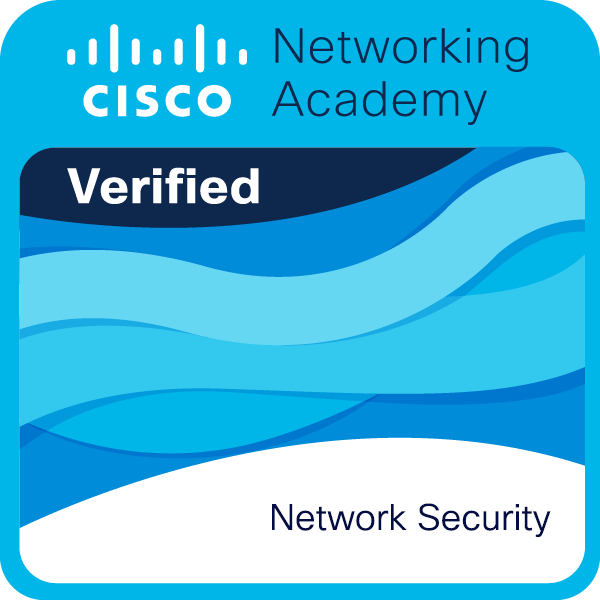
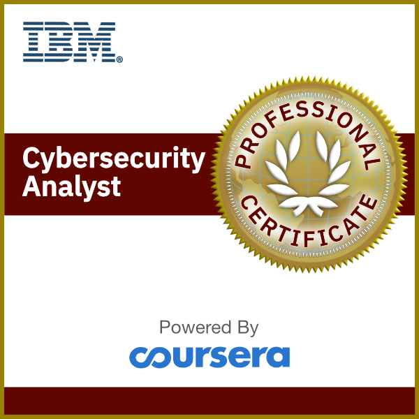

Securing Networks, Protecting Data: Aspiring SOC Analyst
Passionate about Cybersecurity, problem-solving, and protecting people and organizations from security threats. Through continuous learning and professional development, I aim to support organizations by helping maintain secure systems and protecting sensitive information.
About Me
As a dedicated cybersecurity student with a strong foundation in computer science, I am passionate about protecting digital assets from evolving cyber threats. My journey in cybersecurity began with a curiosity about how networks operate and has evolved into a comprehensive understanding of security principles, tools, and best practices.
I specialize in network security, vulnerability assessment, and incident response, with hands-on experience using industry-standard tools like Wireshark, Linux Operating Systems, SQL and Python programming languages. Currently pursuing certifications to become a certified SOC Analyst, I am eager to apply my skills in a professional environment to safeguard organizations against cyber attacks.
When not immersed in cybersecurity labs, I participate in CTF challenges, contribute to open-source security projects, and stay updated with the latest threat intelligence through industry publications and conferences.
50+
Security Labs Completed
3
Certifications Earned
100+
Hours in CTF
Technical Skills
Network Security
Tools & Technologies
Security Concepts
CyberSecurity Projects
Network Traffic Analysis with Wireshark
Conducted comprehensive network traffic analysis using Wireshark to identify suspicious patterns, protocol anomalies, and potential security threats. Created detailed reports on findings and recommended mitigation strategies.
SIEM Dashboard Implementation
Configured a Splunk SIEM dashboard to monitor security events, create custom alerts for threat detection, and generate compliance reports. Integrated multiple log sources for comprehensive visibility.
Python Security Automation Scripts
Developed Python scripts for automating security tasks including log parsing, threat intelligence gathering, and basic malware analysis. Integrated with APIs for enhanced functionality.
SQL Database Security & Threat Analysis
Designed and executed SQL queries for database monitoring, user activity analysis, and detection of suspicious behavior. Worked with relational databases to identify anomalies, manage access controls, and improve data security practices.
Certifications & Training

Cisco Network Security
Certified 2022

Google Cybersecurity Professional Certificate
In Progress

IBM Cybersecurity Analyst
Planned 2027
My Cybersecurity Journey
2022 - Started Network Security Studies
Began formal education in Network Security, focusing on networking fundamentals and basic security concepts.
2023 - Hands-on Projects
Built personal lab environment and completed various cybersecurity projects using Linux, Wireshark, and other tools.
2026 - SOC Analyst Preparation
Currently preparing for SOC Analyst roles through advanced training in SIEM, incident response, and threat hunting.
GitHub Contributions
25+
Repositories
150+
Commits
10+
Contributions
Check out my cybersecurity scripts, tools, and open-source contributions on GitHub.